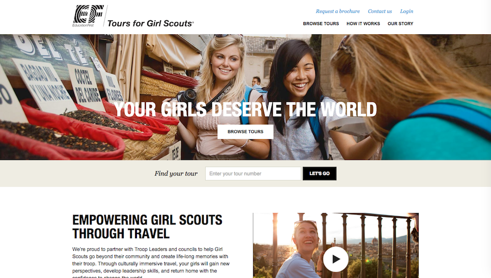

{Website Development + Maintenance}
The Project
EFTours Girl Scout Tours helps girl scouts of america build custom bus tours for their troops. The Girl Scout Tours website had not been updated in terms of content or design for several years, so this project entailed the movement of all of the GST content to a redesigned website. I built the new site using a technology called Sitecore - which meant that I didn’t need to build the site from scratch but was able to copy chunks of the site from our primary EFTours website.

My Role
For this project I was the lead developer. I was responsible for building a new website using a content management system called sitecore, and then strategically passing the site off to content editors and marketers to fill the website with the appropriate content, managing their technical questions through the content entry process. The project’s duration from start to finish was 3 months.
Challenges
Single point of contact - Because I was the lead developer I was the single point of contact for all the marketers and content editors. This was a challenge in terms of communication, and taught me a lot about diplomacy and how to teach vs. trying to do everything myself. (teach a man to fish...)
Enterprise website - This project taught me how to build large websites that require lots of steady maintenance, and also how to work with content creators in the process. I used a technology called sitecore, used by companies that need to build massively customizable web platforms. The technology is basically a massive content storage solution, storing nodes of information (text, images, full web pages, or software scripts) that can be edited by marketers or business analysts in the future.
The Solution
A fully redesigned website, outfitted with awesome content - helping girl scouts see the world and have incredible cross-cultural experiences!